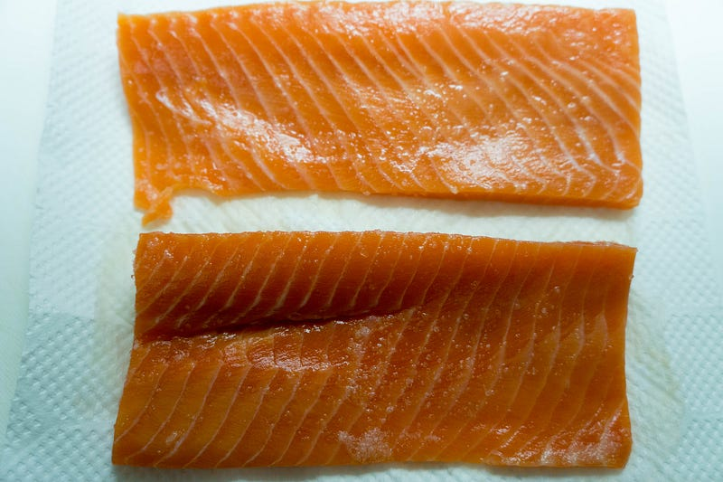
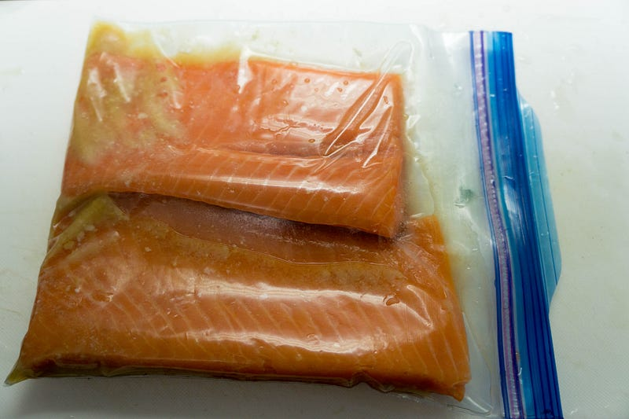
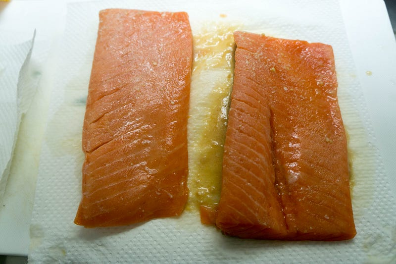
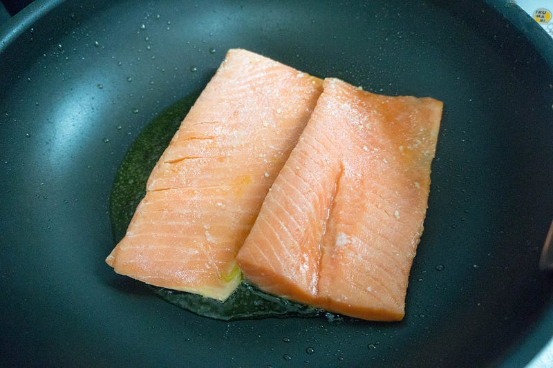
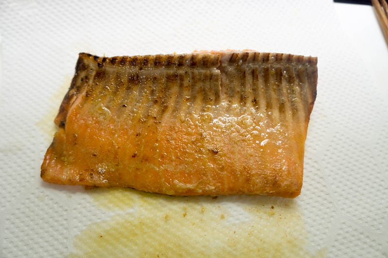

anovaでアトランティックサーモンの西京漬け的な何か
anovaのサイトに載っているレシピの中で”Sous Vide Miso Salmon”なるレシピがあるのに気づいたので、これと似たような何かを作って見る事にする。
If you dislike overcooked, dry salmon, you'll absolutely love this recipe - because it's cooked perfectly every single…recipes.anovaculinary.com
まず、初めての魚の低温調理なので切り身ではなく刺身のサクを買ってきた。作った後の今ならなんか切り身でも行ける気はしてる。

ちょっと塩をして軽く水気を拭き取る。

味噌、砂糖、味醂を先に入れて、味噌を溶いておく。ちなみに今回はこんなもんでいいか、とあんまりまんべんなく調味料をつける努力をしなかったのだが、これだと明らかに味にムラが出る。「2種類の味が楽しめる〜」というポジティブな見方もできるが、これはちゃんと真空パック時に全体に調味料が回るくらいの水分を入れておくのが正解な気がする。次回はこの点を要検証。
anovaの設定は40℃で30分。

40℃だとさすがにほとんど生って感じ。味噌は焦げるので拭き取っておく。

うりゃあ、オリーブオイルでやってやる！

むむッ。うまそうになった！
盛りつけしてできあがり。付け合わせは冷蔵庫で朽ち果てそうだったほうれん草のマヨネーズソテーと、本日特売だった冷凍野菜ミックスのオリーブオイル炒めです。
味は完全に即席西京漬けに相応しいものとなった。ご飯と合う。ただ、先にも書いたように少し味つけにムラが出た。ここは要改善。あとサクの厚さであまり上手く最後の仕上げの火加減をコントロールできなかった。多分もっと「中は刺身、外は焼き魚」みたいな感じにできたと思うんだけど、それにはもう少し厚みが必要… ただ、西京漬けと考えればそれはいらないので、まぁいいか、という感じ。
次回これをやるときは切り身でやりつつ、一旦低温調理をした後の冷凍保存をして見たいと思う。
※ WiFi タイプになります。900W スマホと連動してお鍋の水温をコントロール。どこからでも調理 ポンプ速度：毎分7〜8リットル、360度回転のポンプ アプリで操作可能 設定温度に達したらスマホにお知らせ アプリはAppストアUSな…amzn.to
次回はこちら